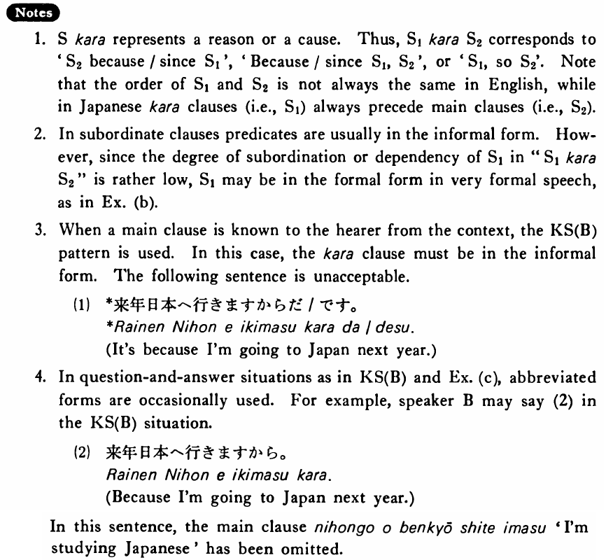

←
DoJG
→
から (3)
(B. 179)
Example sentences
(ksa).
来年日本へ行く
から
日本語を勉強している・います。
I'm studying Japanese because I'm going to Japan next year.
(ksb).
A:どうして日本語を勉強しているん（だ・ですか）。 B:来年日本へ行く
から
だ・です。
A: Why are you studying Japanese? B: It's because I'm going to Japan next year.
(a).
春子は十七だ
から
まだお酒を飲めない。
Haruko is seventeen, so she can't drink sake yet.
(b).
今日は忙しいです
から
明日来て下さい。
Please come tomorrow because I'm busy today.
(c).
A:どうして昨日学校を休んだんですか。 B:頭が痛かった
から
です。
A: Why were you absent from school yesterday? B: It was because I had a headache.
Formation
Sinformal
から
{話す/話した}
から
Because someone (will) talk/talked
{高い/高かった}
から
Because something is/was expensive
{静かだ/静かだった}
から
Because somehing is/was quiet
{先生だ/先生だった}
から
Because someone is/was a teacher
